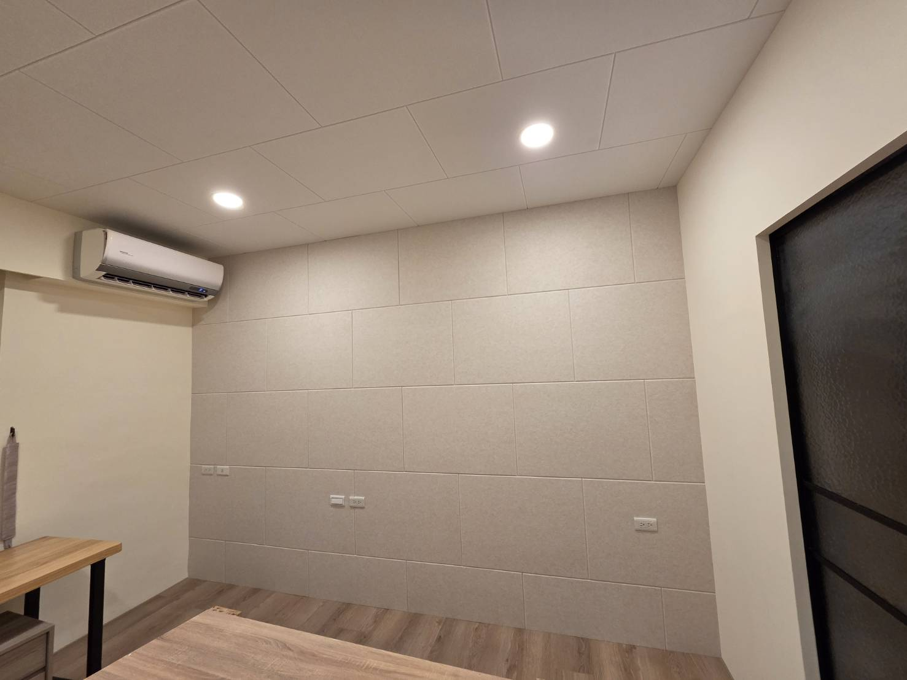
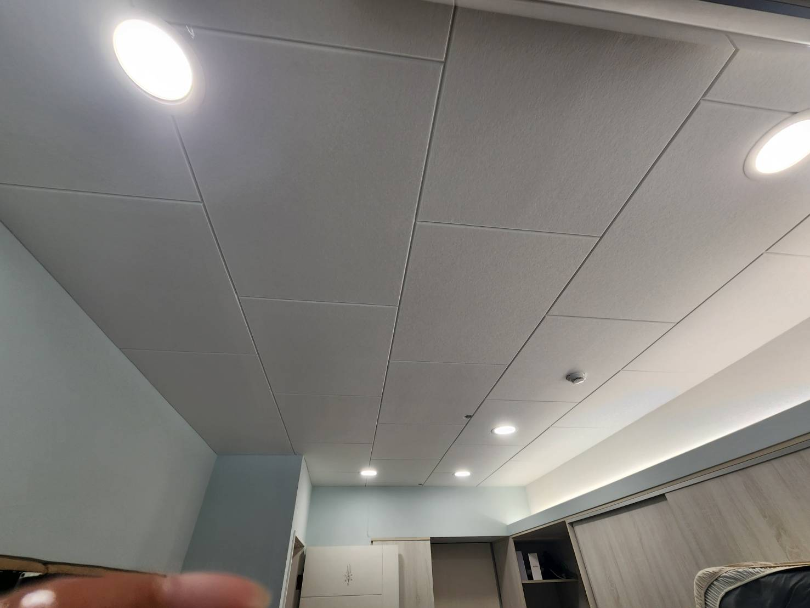
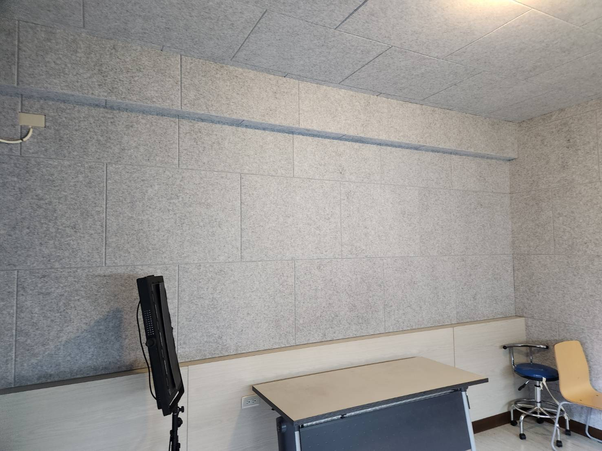
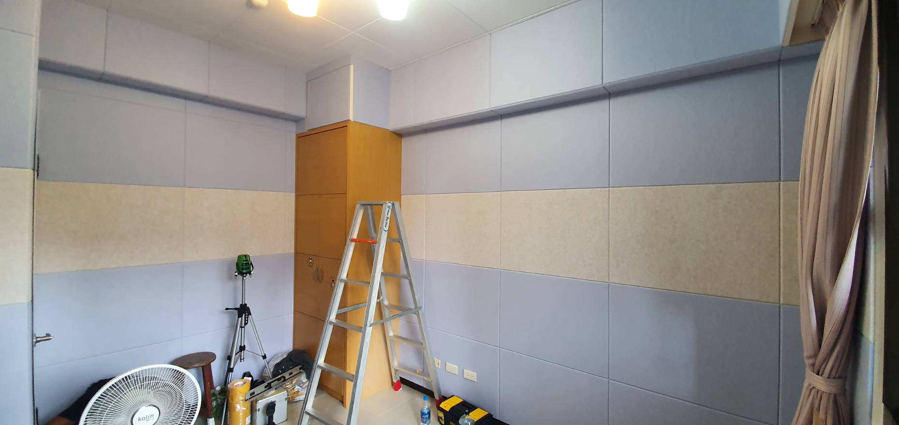

住宅空間
客廳、臥室與開放空間，重點是降低反射又不壓迫室內質感。
ACOUSTIC TREATMENT
吸音不是把牆貼滿。真正要做的是控制反射、縮短混響，讓說話更清楚、音樂更乾淨，同時保留空間原本的設計。
REAL PROJECTS
牆面、天花板與整體色系都要一起考慮。吸音做得有效，也可以看起來像原本室內設計的一部分。






DESIGN WITH SOUND
客廳、臥室與開放空間，重點是降低反射又不壓迫室內質感。
改善多人交談造成的嘈雜與回音，提高語音清晰度。
減少聲音拖尾，讓老師不用一直提高音量，學生也更容易聽清楚。
不是把聲音全部吃掉，而是控制反射與頻率平衡。
牆面不方便施工時，天花板常是很好用的吸音面。
顏色、比例與分割可以融入室內，不必做成制式工程板。
FAQ
主要功能不是。吸音板以降低室內反射與混響為主；阻止聲音穿牆需要看牆體、門窗、縫隙與結構。
不一定。有效位置與面積配置比單純貼滿更重要，還要考慮空間用途與視覺需求。
可以，而且在牆面需要保留裝潢時，天花板常是很有效的配置位置。
CONTACT
兩種問題做法完全不同，先判斷再花錢。